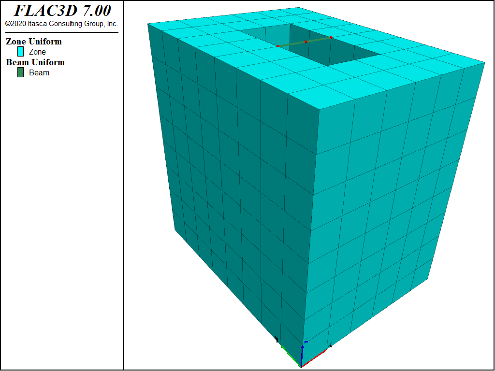
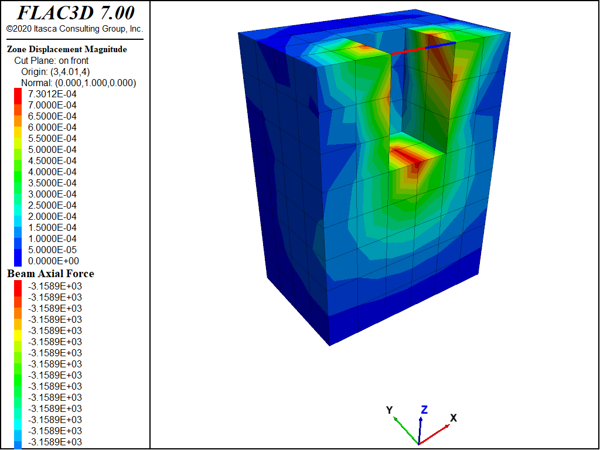

教程：竖向开挖的支撑支护
问题描述
注意
要在 FLAC3D 中查看此工程，请使用菜单命令 。选择“Structure/Beam/BracedSupport”，再选择“BracedSupport.f3prj”即可加载。所使用的主数据文件列于本示例末尾（shown at the end of this example）。其余数据文件可在该工程中找到。
本示例考察一条沟槽，其开挖边墙顶部由一根横撑支护。以下命令序列针对支撑在开挖后立即施作的简单情况。横撑以由两个单元组成的单根梁单元表示，使用 沿线创建梁单元命令（structure beam create by-line） 命令创建。使用该命令可确保梁单元两端附着到网格，使平动自由度刚性连接、转动自由度自由。
图 1（Figure 1） 给出了支撑的位置，图 2（Figure 2） 展示了开挖墙内位移的减小。[CS：同样，下文内容原先用于链接回“简单教程”]，与 defcrossrefFilename{ftd127}ref{127F1001} 中所示的（位于 defcrossrefFilename{ftd127}ref{127S1001}volI）相比。


图 1：采用梁单元支护的支撑开挖。


图 2：支撑开挖的位移等值线与横撑中的轴力。
数据文件
BracedSupport.dat
model new
model large-strain off
model title "Braced support with a beam of a vertical excavation"
; 创建简单的长方体
zone create brick size 6 8 8
zone face skin ; 标记边界
; 指定材料模型和参数
zone cmodel assign mohr-coulomb
zone property bulk 1e8 shear 0.3e8 friction 35
zone property cohesion 1e10 tension 1e10 density 1000
; 重力与边界条件
zone face apply velocity-normal 0 range group 'East' or 'West'
zone face apply velocity-normal 0 range group 'North' or 'South'
zone face apply velocity-normal 0 range group 'Bottom'
; 初始条件
model gravity 9.81
zone initialize-stresses ratio 0.3
model solve ratio-local 1e-5
model save 'initial'
; 降低网格单元强度并开挖
zone property cohesion 1.25e3 tension 1e3
zone cmodel assign null range position (2,2,5) (4,6,10)
model large-strain on
zone gridpoint initialize displacement (0,0,0)
; 创建梁支撑
struct beam create by-line ( 2, 4, 8) ( 4, 4, 8) segments=2
struct beam prop young=2.0e11 poisson=0.30
struct beam prop cross-sectional-area=6e-3 moi-z=200e-6 ...
moi-y=200e-6 moi-polar=0.0
model solve ratio-local 1e-5
model save 'final'
| 这些内容对您有帮助吗？… | FLAC3D © 2019, Itasca | 原文更新于 2020 年 10 月 8 日 |